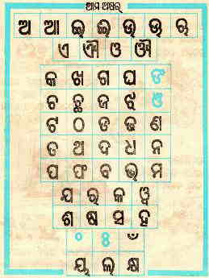
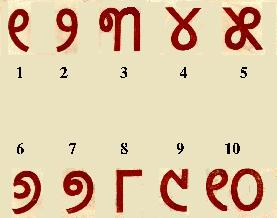

ORIYA ALPHANUMERALS
Oriya Alphabets

Source:
Source:
Oriya Numerals

Source:
This page has been accessed
1081
times since June 23, 1995.
Ride back to Home Page...
![[IMAGE]](../../recovered-shared-art/rath.gif)